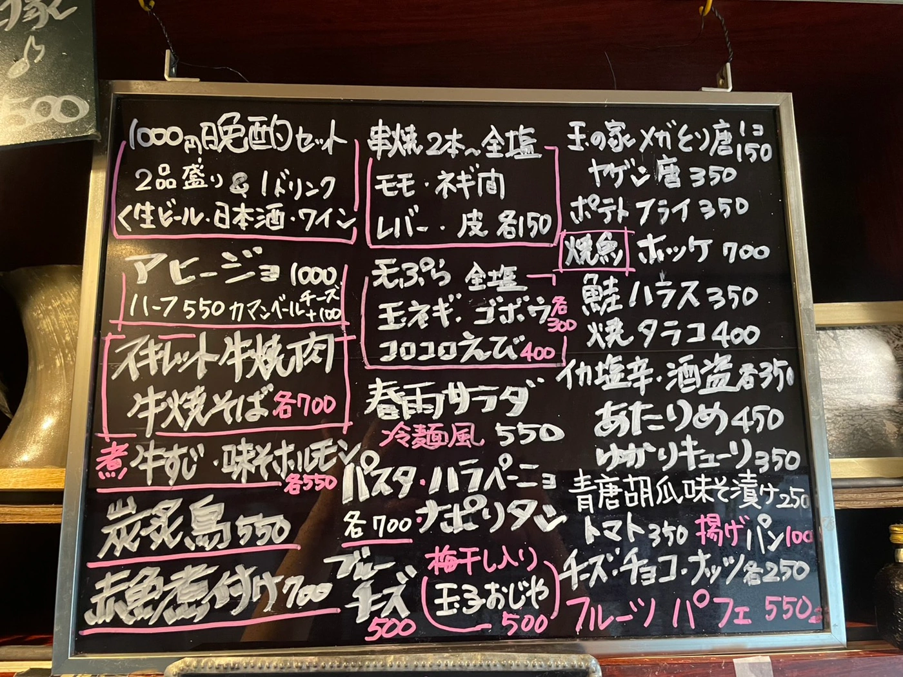

FOOD & DRINK
お料理・お酒
歌の合間に、おいしいひととき。


YOUR FAVORITE GLASS
一杯を、
自分のペースで。
歌う前の一杯も、お料理に合わせる一杯も。
お好きなお酒とともに、ゆっくりお楽しみください。
お酒の種類や価格は、店内でご案内しています。
おすすめも、お気軽にお声がけください。
AT THE COUNTER
黒板にも、おいしい出会い。
玉の家の店内メニューをご覧いただけます。
店内のお品書きを写真で見る

写真は撮影時の内容です。写真をタップすると別タブで拡大表示します。
COME ON IN
今夜、玉の家で。
お席のご予約・お問い合わせは、お電話で。
おひとりでも、みんなでも。お待ちしています。